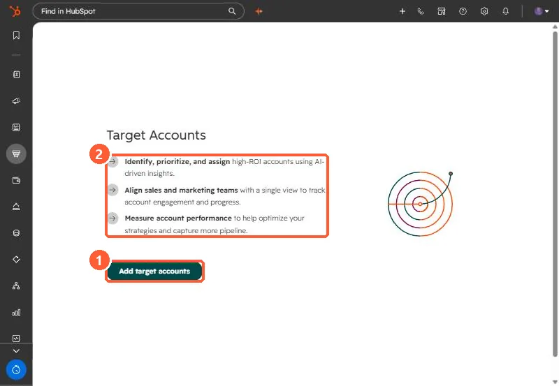

Short answer
Sales, Target Accounts holds the companies both teams agree to pursue. Choose them from all CRM companies or a list, and HubSpot recommends more. The Ideal customer profile tier property ranks fit from Tier 1 to Tier 3. With LinkedIn Ads connected, a company segment audience can sync target accounts or a tier to LinkedIn.
1. Start
My demo portal has no target accounts yet.


2. Choose and rank
- Choose from all CRM companies or a list, filtered by target market. See Markets.
- Set Ideal customer profile tier: Tier 1 is a great fit, Tier 3 acceptable but low priority.
- Open an account to see its activities in the side panel.
3. Use them
Build saved views in the sales workspace, segments for marketing, and LinkedIn company audiences from target accounts or a tier. If you track hiring as a signal, see companies hiring for HubSpot.